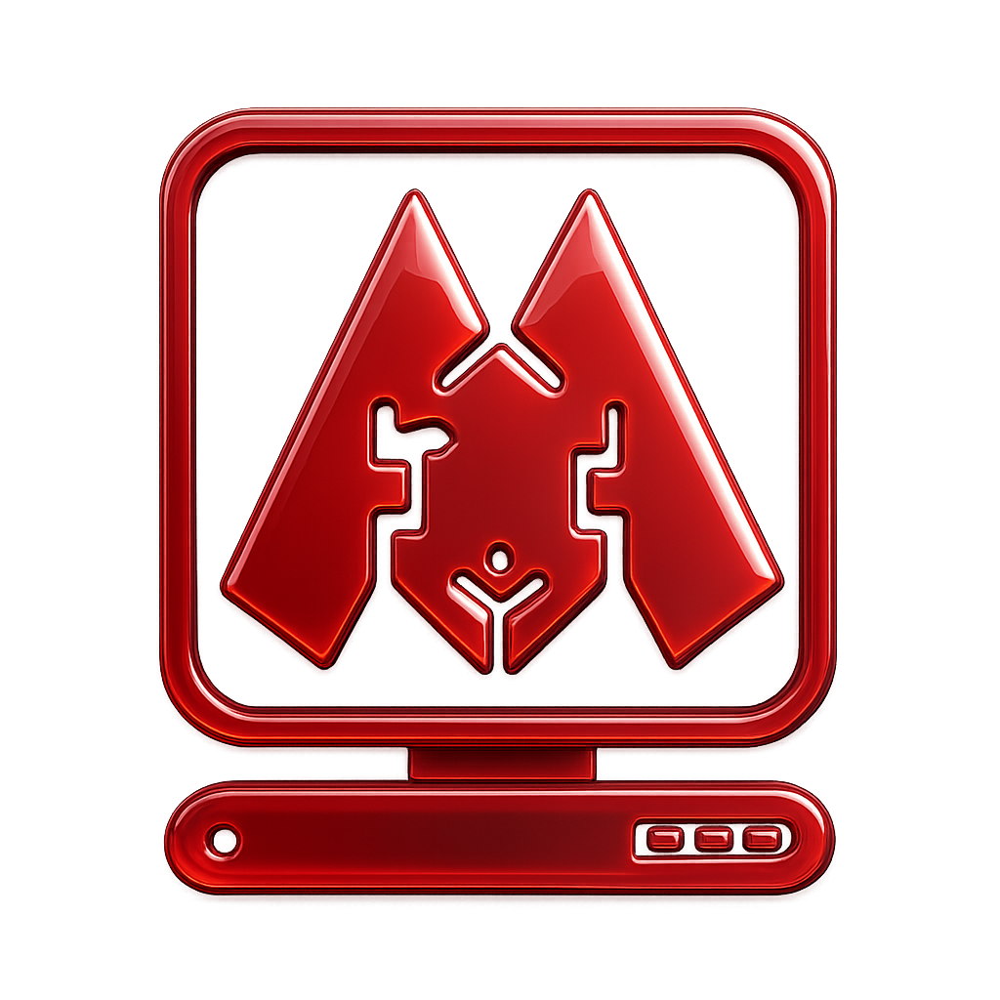
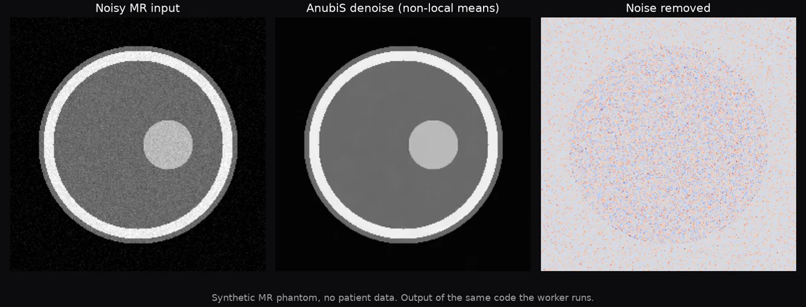
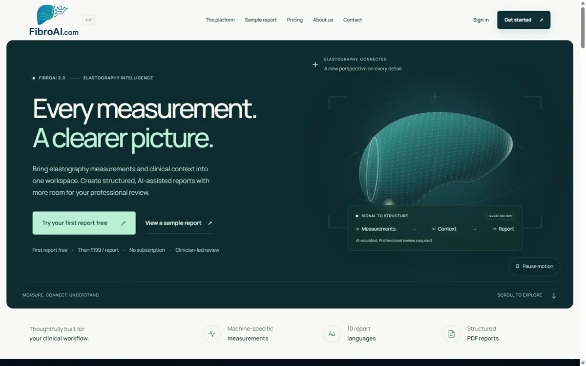
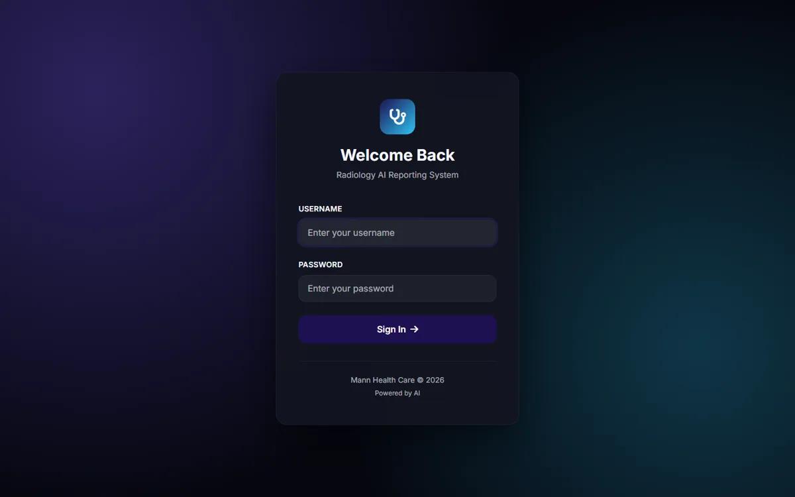
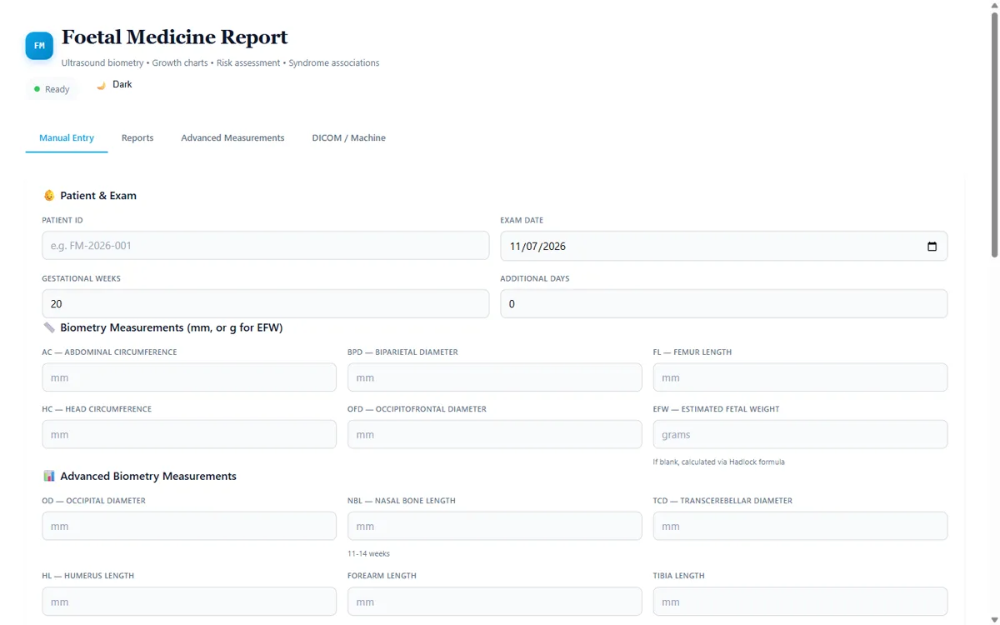
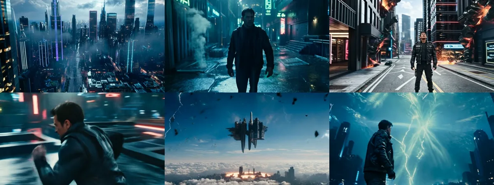
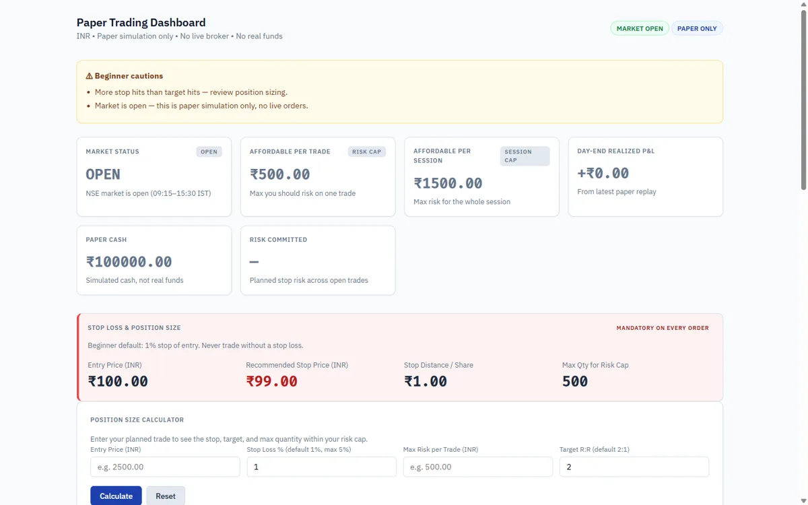

Consultant Radiologist (M.D. Radiodiagnosis, MBBS from Government Medical College, Amritsar) with 12+ years of clinical experience at Mann Scanning Centre, a NABH-accredited imaging centre in Jalandhar, Punjab. Expert in cross-sectional imaging (MRI, CT, Ultrasound), foetal medicine, and foetal echocardiography. Self-built AI/software engineer developing clinical AI software, health-education video automation, DICOM viewers, and AI digital-twin production pipelines. Dual-domain fluency in medicine + AI enables delivery of tools clinicians use and content patients watch.
Reporting MRI, CT, 4D Ultrasound (GE Voluson), DEXA, and FibroTouch elastography studies at a NABH-accredited diagnostic imaging centre. Daily clinical reporting across multiple imaging modalities with direct patient contact and quality oversight.
Builds clinical AI software, health-education video automation, and freelance digital products. Serves clinics, scanning centres, health creators, and trading firms as a solo studio.
Producer of evidence-led health-education short-form video using an AI digital-twin factory: voice clone, AI talking-head, kinetic captions, SFX placement.
Published science-fiction and children's books across Amazon and Goodreads.
Expert-level interpretation and reporting of cross-sectional imaging modalities used daily in diagnostic practice at Mann Scanning Centre.
Specialist in prenatal imaging, foetal biometry, growth assessment, and risk stratification using INTERGROWTH-21st standards.
Expert in foetal cardiac imaging — structural assessment, flow evaluation, and congenital heart disease screening on 4D ultrasound platforms.
Operations and quality oversight at a NABH-accredited imaging centre serving Jalandhar and surrounding Punjab region.

MRI denoising and 2x in-plane interpolation inside PACS workflow. Quality gate passed on 18/18 real MR series (median SNR gain +8.8 dB).

AI-assisted elastography reporting in 10 languages. Structured PDF reports with clinician-led review. Live in production at fibroai.com.

Voice-first reporting: Whisper dictation into findings pad, rule-based section mapping, cloud second opinion, offline FAISS template path.

Ultrasound biometry entry, INTERGROWTH-21st growth charts, risk assessment, DICOM/machine import, PDF narrative reports.

Agentic video-production system: 12 pipelines, 52 tools, script-to-MP4 automation for explainers, animations, and cinematic edits.

Opening-range scanner, risk-first position sizing, stop-loss rules, Indian market news integration. Paper simulation only.
Available for remote freelance work.
Services: Health-education reels · Medical voiceover (HI/EN/Punjabi) · Clinical web tools (DICOM/FastAPI) · NSE trading dashboards · AI video automation · Kids' content animation
Website: https://harkaranmann.mannscan.in | Resume: https://harkaranmann.mannscan.in/resume.html
Email: harkaran@msn.com | Instagram: instagram.com/harkaranmann | YouTube: youtube.com/@Dreamdoorkids
Location: Jalandhar, Punjab, India (IST · Remote-friendly)